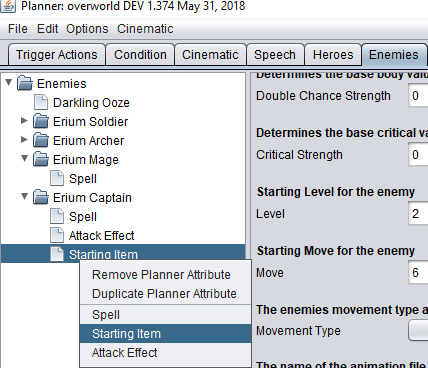

Overview
Defining Enemies is done on the Enemies tab of the planner. Each Enemy consists of a set of statistics that effects its' in battle prowess, special abilities and starting equipment. Each Enemy also must have an animation file associated with it that has both overland movement animations as well as attack cinematic animations. Multiple enemies of the same type can appear in the same battle and may appear in multiple battles throughout the course of the game; unlike Heroes, each instance of this enemy will begin each battle as if they were just being created for the first time. To create a new Enemy right click on the Enemies navigator under the Enemies tab and select "Add Planner Item"

Movement Type
Each enemy will have a movement type that dictates how terrain effects it's movement in battle. Available values for this property are set in the implementation of the EngineConfigurationValues that you have defined via the getMovementTypes attribute. Each moveable space in battle should be defined with one of the terrain types in your implementation of EngineConfigurationValues via the getTerrainTypes attribute.
For more information about defining terrain and movement types see: Configuring the Engine
For more information about the effects of terrain and movement types see: Default Battle System
Statistics
All statistics defined for a given enemy represent their base statistics, that means that equipped items may modify the specified values.
Special Attack Chances
Just like Heroes, each time an enemy uses a basic attack or is attacked with a basic attack there is a chance that they will perform a special beneficial action.
- Counter: The target of attack will perform a single attack action against their attacker provided that they are in range. This attack deals damage equal to the damage they would have normally done times the value defined in the
BattleFunctionConfigurationby thegetCounterDamageModifier. - Evade: The target of the basic attack will take no damage or effects from the a single attack. The defendants "Dodge" animation will be shown.
- Double: The attacker will perform two full damage attacks back-to-back against it's target.
- Critical: The attacker will deal increased damage with their basic attack, the amount dealt is equal to the damage they would have normally done times the value defined in the
BattleFunctionConfigurationby thegetCritDamageModifier.
The value specified in this field should be a number 0-100 that indicates the percent chance that the enemy will perform the given special action. For instance a value of "20" in the 'Double Chance Strength' field means that each time the enemy performs a basic attack they will have a 20% to perform a double attack.
Each of these percent values may be further modified in the BattleFunctionConfiguration via the getDoublePercent, getCounterPercent, getDodgePercent, getCritPercent attributes which allows for adding custom values that can be used to increase/decrease battle difficulty.
For more information about defining special attack chances and outcomes see: Configuring the Engine
Enemy Level
This value is not presented to the player by default, but is used to determine how much experience should be gained by attacking or defeating this enemy. In general the higher the level, the higher the experience gained. The exact effect of this value will likely be used in the BattleFunctionConfiguration via the getExperienceGainedByDamage attribute.
For more information about defining experience gain see: Configuring the Engine
For more information about experience and levels see: Default Battle System
Attack Effects
Enemies can be defined to have attack effects applied on a basic attack. Enemies with an attack effect will have some percent chance between 0-100 to apply the indicated attack effect on their target provided that the target does not dodge. The list of available attack effects to choose from is configured in your BattleEffectFactory via the getBattleEffectList attribute.
To create an attack effect for a given enemy, right click on their name in the planner and select "Attack Effect".

For more information about defining attack effects see: Configuring the Engine
For more information about attack effects in battle see: Default Battle System
Spells
Enemies can be defined to have the ability to cast spells. Enemy spells perform in just the same way that Hero spells do; they still take MP and have the same range and area. The list of available spell to choose from is configured in your SpellFactory via the getSpellList attribute.
To allow a given enemy to cast a spell, right click on their name in the planner and select "Spell".

Note: Enemies with spells must be defined to use an AI that considers spells, currently "cleric" or "wizard". This is done via the map on a per-enemy basis.
For more information about defining spells see: Configuring the Engine
Starting Items
Enemies can begin a battle with equipment and other items. These will be present for each of the enemies of this type in the battle. The list of items available to give to an enemy is the same as the list of items defined in the planner. Keep in mind when adding equipped items to an enemy that it could modify the final statistics of the enemy when it is in battle. If there is an item that you would like to appear in an enemies inventory but only in specific cases, then the item should be added to the enemy via a trigger and not defined here.
To give an enemy a starting item, right click on their name in the planner and select "Starting Item".

For more information about creating items see: Defining Items
For more information about using triggers see: Using Triggers and Conditions
Bosses
Although bosses are likely only appear in battle once per game they are defined just like other enemies. If their death is a key condition of a battle it should be set via conditions like normal.
For more information about using conditions see: Using Triggers and Conditions
Planner Attributes
Default values
- Name: The name of the enemy
- HP: Starting HP for the enemy
- MP: Starting MP for the enemy
- Attack: Starting Attack for the enemy
- Defense: Starting Defense for the enemy
- Speed: Starting Speed for the enemy
- Fire Affinitiy: The enemies base fire affinity. Items can modify this value.
- Electricity Affinitiy: The enemies base electricity affinity. Items can modify this value.
- Cold Affinitiy: The enemies base cold affinity. Items can modify this value.
- Dark Affinitiy: The enemies base dark affinity. Items can modify this value.
- Water Affinitiy: The enemies base water affinity. Items can modify this value.
- Earth Affinitiy: The enemies base earth affinity. Items can modify this value.
- Wind Affinitiy: The enemies base wind affinity. Items can modify this value.
- Light Affinitiy: The enemies base light affinity. Items can modify this value.
- Body Strength: Determines the base body value for the hero.
- Mind Strength: Determines the base mind value for the hero.
- Counter Chance Strength: Determines the base counter value for the hero.
- Evade Chance Strength: Determines the base evade value for the hero.
- Double Chance Strength: Determines the base body value for the hero.
- Critical Strength: Determines the base critical value for the hero.
- Level: Starting Level for the enemy
- Move: Starting Move for the enemy
- Movement Type: The enemies movement type as it relates to land effect and barriers
- Animation File: The name of the animation file that should be used for this enemy
- Gold Dropped: The amount of gold that is dropped on death.
- Palette: (CURRENTLY UNUSED) The palette that should be used to modify the selected animation colors
Spell: A spell that this enemy knows
- Spell ID: The ID of the spell that this enemy knows
- Max Level: The max level known of the specified spell
Starting Item: An item that this hero should start with
- Item ID: The ID of the item that this enemy should start with
- Item Equipped: If true, the item will start as equipped.
Attack Effect: An effect that may occur on the enemy attack
- Effect ID: The ID of the effect that the enemies attack may cause. A value of CUSTOM means that this weapons effect will be passed to the BattleFunctions script to be performed.
- Effect Chance: The percent chance that the effect will occur
- Effect Level: The level of the effect that should be applied (1-4)